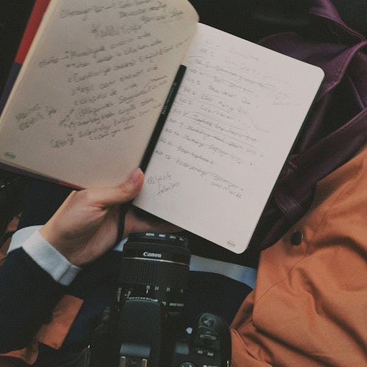
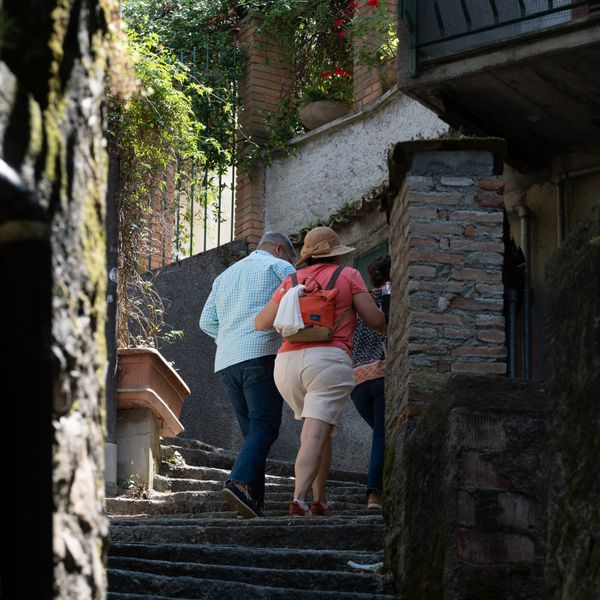
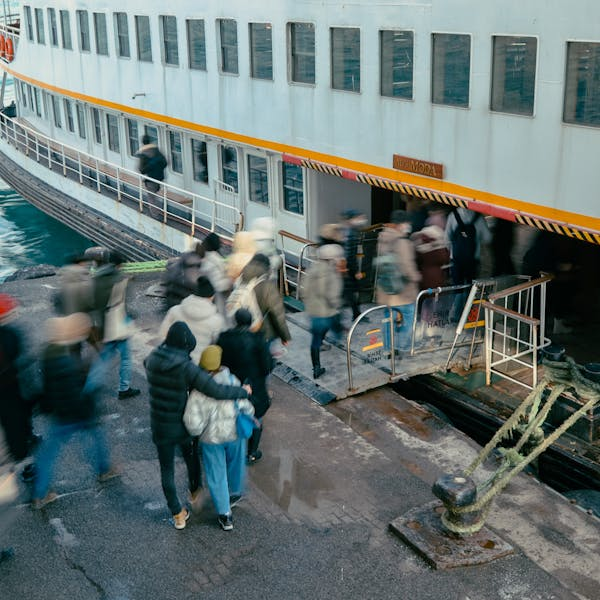
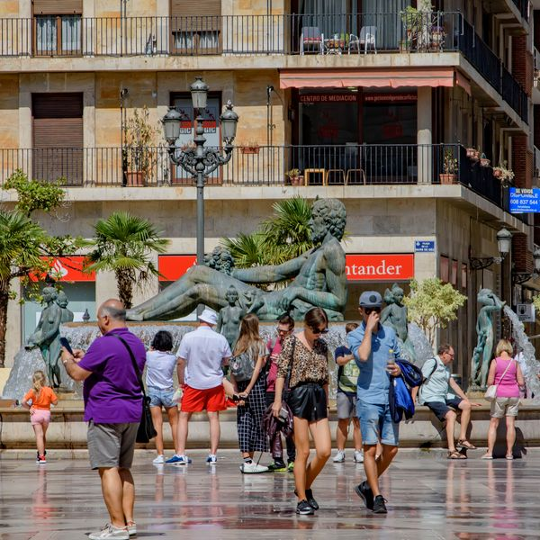
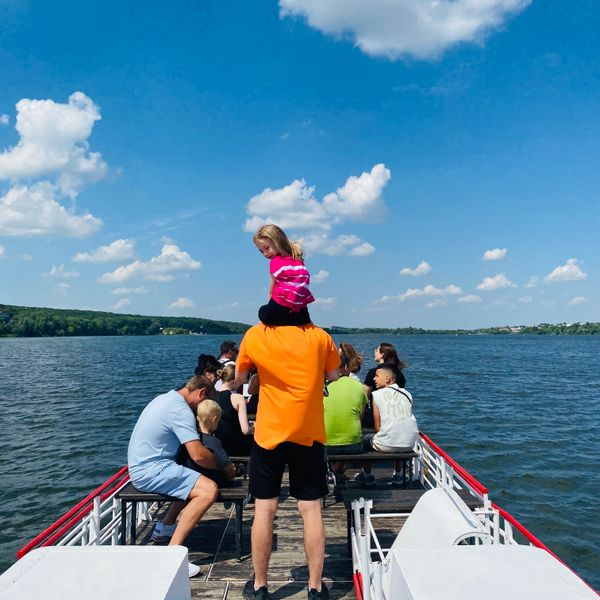
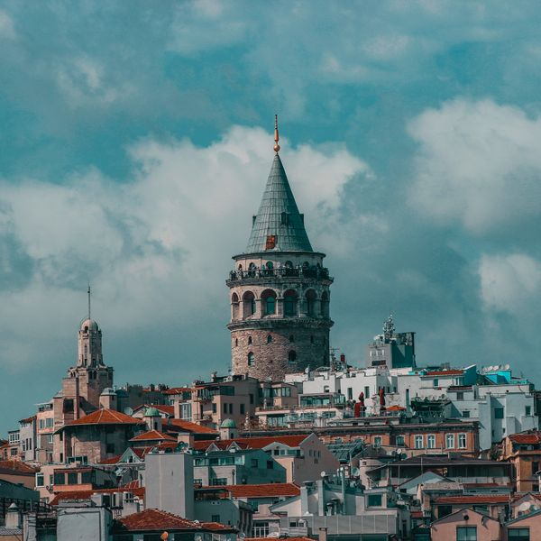
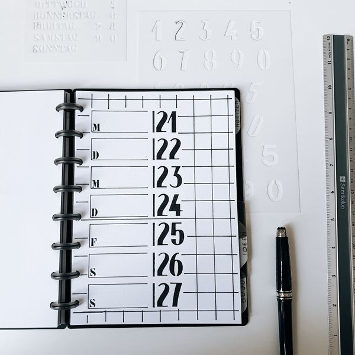

A

a detailed plan of a journey with times and activities
B

a guided tour of a place that the group does on foot
C

a structure built to remember a person or an event
D

a short organized group trip to an interesting place
E

the place where a tour group agrees to meet
F

a visit you start and finish on the same day
G

a famous building or place that is easy to recognize
H

a holiday with transport, hotel and tours included in one price